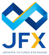
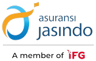
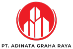
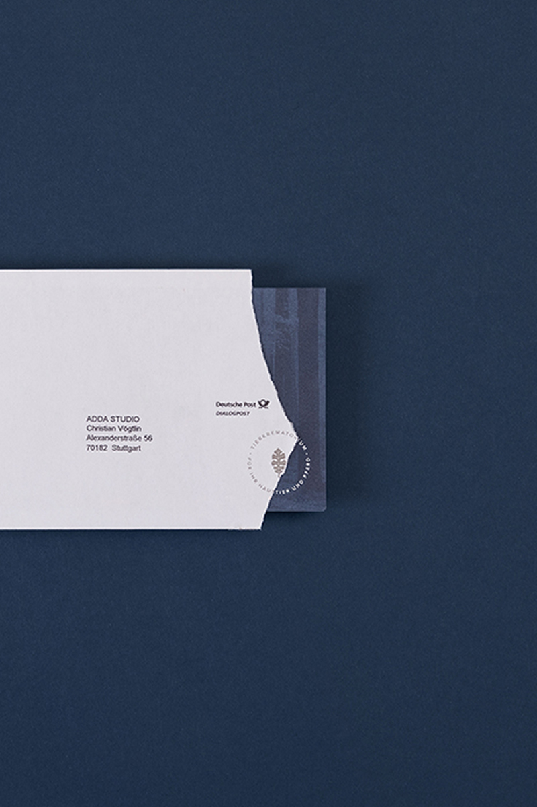
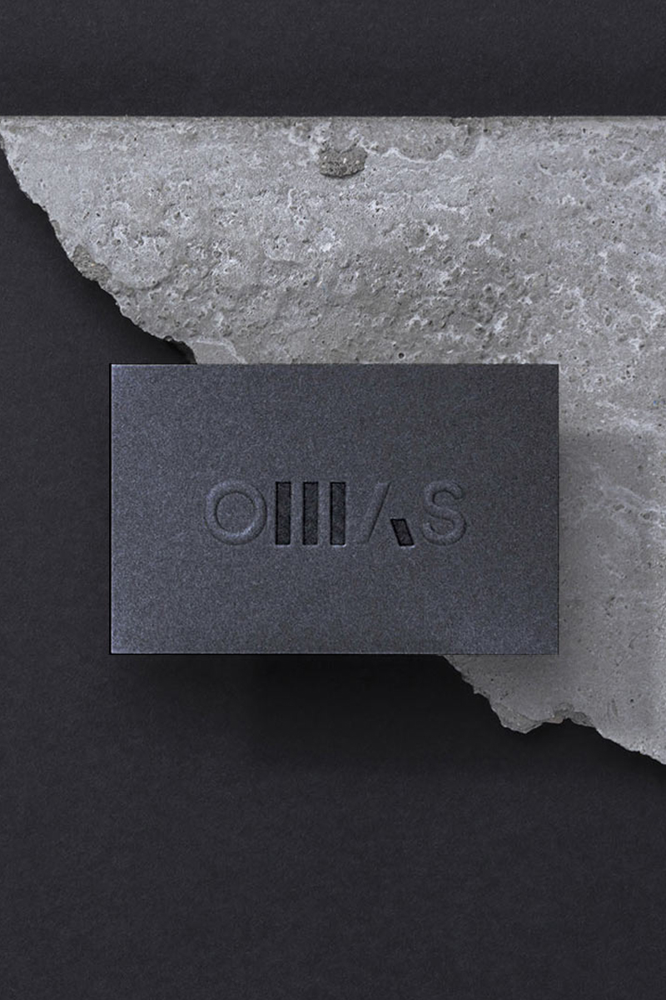
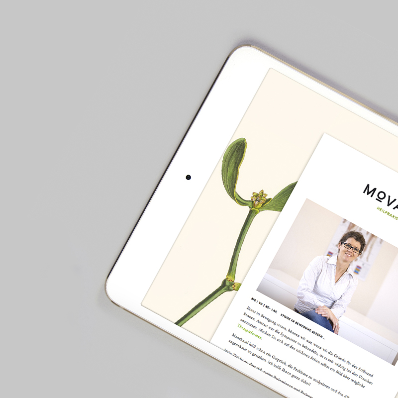
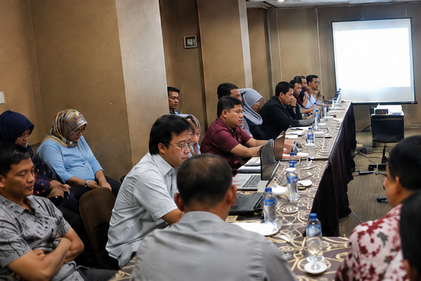

Badan Nasional Penanggulangan Terorisme (BNPT RI)
PT Global Agra Ripta Solusindo
Membangun sistem yang dipercaya
GARISDev merancang, membangun, dan mengintegrasikan perangkat lunak untuk pemerintahan, BUMN, dan korporasi — dari aplikasi web dan mobile hingga dashboard analitik dan sistem enterprise.
2014Beroperasi sejak
7Platform unggulan
15+Solusi enterprise
Klien & Mitra
Dipercaya institusi negara dan korporasi nasional
Sejak 2014, GARISDev dipercaya kementerian, instansi pertahanan, lembaga pemerintah, dan korporasi nasional dalam mengembangkan serta mengelola solusi teknologi informasi yang andal.



Rekam Jejak
Proyek strategis yang telah kami bangun
Solusi teknologi berstandar tinggi yang diimplementasikan di instansi pertahanan, lembaga pemerintah non-kementerian, bursa berjangka, dan korporasi terkemuka.

Skomlek Mabes TNI
Aplikasi Matkomlek Skomlek Mabes TNI
Kementerian / Lembaga Terkait
Aplikasi Pemetaan Perumahan
Jakarta Futures Exchange (JFX)
Website & Digital Platform JFX.CO.ID

PT Inti Sinergi Persada
Corporate Platform PT ISP

Mom N Jo Network
Integrated Spa & Wellness System Mom N Jo
Layanan Kami
Layanan rekayasa teknologi dan produk digital
Sebagai mitra teknologi end-to-end, GARISDev menggabungkan strategi teknologi, pengembangan aplikasi terpadu, integrasi sistem, dan inovasi untuk menghasilkan solusi yang praktis, scalable, serta sesuai kebutuhan bisnis nyata.
Digital Strategy & Consulting
Perencanaan arsitektur teknologi terpadu, analisis kelayakan sistem, dan penyusunan roadmap transformasi digital enterprise.
Web Application Development
Pengembangan aplikasi web modern yang scalable, aman, dan berkinerja tinggi sesuai kebutuhan proses bisnis nyata.
Mobile App Development
Pengembangan aplikasi mobile native (iOS & Android) dan cross-platform dengan performa optimal untuk operasional bisnis.
System Integration
Integrasi sistem heterogen melalui arsitektur API terpadu, middleware aman, dan pipeline transmisi data antar-aplikasi.
Dashboard & Business Intelligence
Visualisasi data real-time, monitoring operasional, dan analitik data untuk memperkuat kontrol dan pengambilan keputusan manajemen.
Maintenance & Technology Support
Layanan pemeliharaan sistem terencana, mitigasi keamanan berkala, dan optimalisasi performa teknologi secara berkelanjutan.
Produk Unggulan
7 platform unggulan siap pakai
Solusi perangkat lunak terintegrasi yang dirancang khusus untuk memecahkan tantangan operasional spesifik di berbagai sektor industri: perhotelan, hunian vertikal, pusat perbelanjaan, hingga manajemen ambulans.
HOSPITALITY & WELLNESS
Wellora
Spa & Wellness Management System
Sistem operasional jaringan gerai spa, penjadwalan terapis presisi, POS modern, dan kontrol stok multi-cabang terintegrasi.
BookingPOS KasirManajemen TerapisMembershipInventoriLaporan Pendapatan
PROPERTY MANAGEMENT
ApartHub
Residential & Apartment Management Platform
Platform ekosistem hunian modern untuk pengelola gedung dan penghuni: auto-billing IPL, tiket perbaikan, dan visitor pass QR.
Aplikasi PenghuniAuto-Billing IPLVisitor PassTiket LayananBooking FasilitasExecutive Dashboard
COMMERCIAL & RETAIL
TenantHub
Tenant & Mall Management Platform
Portal pengelola kawasan komersial dan tenant: rekonsiliasi sewa, billing utilitas, izin kerja fit-out, dan antrean loading dock.
Portal TenantBilling UtilitasIzin Kerja (Permit)Jadwal Loading DockTiket LayananAlur Kepatuhan
PROPERTY DEVELOPER
Propera
Property Developer Management Platform
Platform manajemen developer properti terpadu untuk mengelola proses penjualan unit dari prospek awal hingga serah terima fisik.
Manajemen Prospek (Lead)Booking UnitInventori UnitPenagihan PembayaranSerah Terima (Handover)Layanan Purnajual
HOTEL & RESORT PMS
Stayora
Hotel Management & Guest Experience Platform
Property Management System (PMS) untuk reservasi kamar instan, profil tamu, koordinasi housekeeping, dan analitik okupansi real-time.
Reservasi KamarProfil TamuKoordinasi HousekeepingRoom ServiceBillingHotel Dashboard
HEALTHCARE DISPATCH
GoAmbulan
Healthcare On-Demand Platform
Platform dispatching ambulans darurat dengan live GPS tracking armada, integrasi rumah sakit rujukan, dan navigasi rute tercepat.
Pemesanan AmbulansDispatching DaruratLive GPS TrackingManajemen Perjalanan PasienMonitoring Operator
AI & INTELLIGENCE
AIRA
Advanced Intelligence Research & Analytics
Platform analitik cerdas berbasis AI untuk pemantauan percakapan publik, deteksi sentimen real-time, dan pelaporan intelijen otomatis.
Riset DigitalPemantauan Multi-KanalAnalisis SentimenWorkspace InvestigasiPelaporan Intelijen
Katalog Solusi
Solusi digital lainnya
Katalog sistem informasi operasional yang siap disesuaikan dan diintegrasikan dengan infrastruktur teknologi organisasi Anda.
- E-Government Application System
- Academic Information System
- PSB / Student Admission Platform
- Hospital Information System
- Human Resource Information System (HRIS)
- Inventory Management System
- Retail Sales Information System
- Finance & Budget Planning System
- Document & Archive Management System
- Correspondence Management System (E-Office)
- Customer Relationship Management System (CRM)
- Travel Umrah Management Platform
- Dashboard & Business Intelligence System
- Custom Mobile Application
- API Development & System Integration
Budaya Perusahaan
Tata nilai perusahaan SPORTIF
GARISDev memegang teguh tata nilai SPORTIF sebagai landasan profesionalisme, kualitas rekayasa, dan komitmen layanan berkelanjutan dalam setiap pengembangan produk dan kemitraan strategis.
Sustainability
Mempertahankan kualitas layanan terbaik secara berkelanjutan bagi mitra klien.
Professional
Mengedepankan kompetensi, efektivitas, dan efisiensi serta bertanggung jawab penuh atas hasil pekerjaan.
Observe
Mengamati perkembangan teknologi terkini agar dapat diaplikasikan secara tepat guna.
Relationship
Membangun kemitraan strategis yang baik dan bersinergi untuk mencapai harapan perusahaan serta stakeholder.
Trust
Menjaga kepercayaan pelanggan dan stakeholder di setiap tahap kerja sama.
Innovation
Menciptakan inovasi dan terobosan baru dalam rangka memberikan solusi terbaik.
Flexible
Mampu beradaptasi dan menyesuaikan diri dengan perkembangan teknologi serta kebutuhan bisnis terkini.
Mulai Kolaborasi
Butuh mitra rekayasa yang bisa diandalkan?
Hubungi KamiVisi Kami
Menjadi mitra teknologi terpercaya yang mendorong transformasi digital dan pertumbuhan berkelanjutan.
“Sistem yang baik tidak menarik perhatian. Ia hanya bekerja, setiap hari, tanpa kompromi.”
Filosofi rekayasa GARISDev
Teknologi
Teknologi & kapabilitas infrastruktur
Penguasaan teknologi berstandar enterprise yang siap diimplementasikan dan diintegrasikan dengan sistem eksisting organisasi Anda.
✓
Mobile & Web Framework
Android Native · iOS Apple Developer · Flutter · Laravel · Goravel · Inertia.js
✓
Enterprise Database
Oracle Database · Microsoft SQL Server · Tibero Database · PostgreSQL · MySQL
✓
Business Intelligence & Analytics
Tableau · IBM Cognos
✓
Infrastructure, Network & Communication
Linux · Dell Server · MikroTik · Cloudflare · Tailscale · Asterisk VoIP
Hubungi Kami
Konsultasi solusi & profil perusahaan
Diskusikan kebutuhan arsitektur perangkat lunak, sistem E-Government, dan integrasi enterprise Anda langsung bersama tim teknis GARISDev.

PT Global Agra Ripta Solusindo
Unduh dokumen resmi profil perusahaan untuk kebutuhan evaluasi internal, pengadaan B2B/pemerintah, rekam jejak portofolio, dan arsitektur kapabilitas sistem.
Unduh Company ProfileUnduhan langsung tanpa formulir registrasi.
Butuh respons cepat? Chat WhatsApp